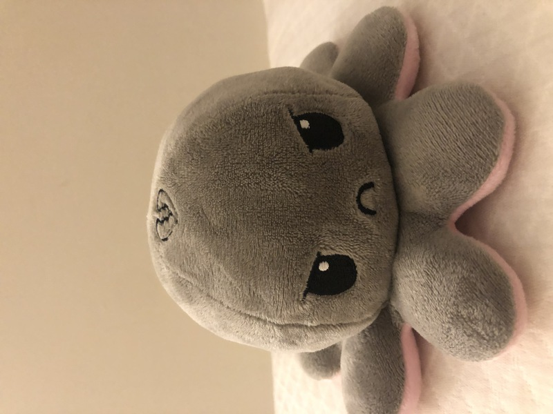
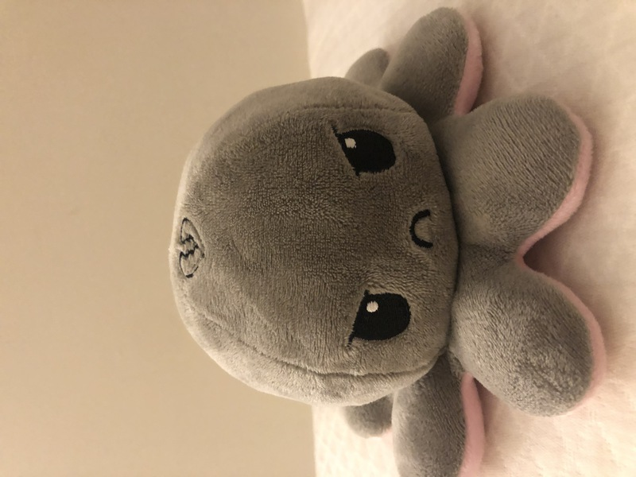

我和我家人在厦门旅游时的照片。比我高一点点的是我的姐姐，她有一个惊为天人的大鼻孔 这一点貌似遗传的是爸爸。与之相反，我五官端正，相貌平和。 当然了，这已经是很久以前的照片了。现在我成了全家最高的人。 就连姐姐跟我说话都要抬起头，带着三分敬畏。
记忆里这次去丽江好像是我们全家人最后一次一起出门旅游。 自此之后，姐姐便去了德国交换，又去了英国读书。两年后我也去了美国。 爸爸和妈妈也分居海南和香港。再过几年，等我们俩长大了再好好陪陪他们， 再一起把全世界都玩它个遍。
她是蔡玘含，我最崇敬爱慕的女人。她唯一的缺点就是不怎么听话，其他都很棒。
外号玘咪，母老虎，菠萝头，小雪兔。生于1999-11-29。 用博爱胸怀陪伴JJ。平时凶不拉机，但是分别久了就会变得跟小奶兔一般粘人。
我的宠物很多，这里尽量给大家一一介绍

首先是人见人爱的虎皮狗。她是我姐姐最爱的女儿，我便是她的舅舅。 把她放在第一位是因为我姐姐很爱这只臭老虎，可是蔡玘含却不怎么喜欢她， 导致她经常被放在床边一只虎享受孤独。我觉得有些许对不起这只老虎， 所以把第一名的殊荣给了她。

阿糕，蔡玘含的宠物，我不被允许摸他，但是摸到他是迟早的事， 所以摸不摸还是由我自己来决定的。不怎么好看，只是软。


阿颓。正面是龙，反面是壁虎。优点：可爱且软。缺点：被蔡玘含摸糙了。

呜呜，最得宠的宠物。眼睛大，听话，乖巧。有她妈妈的气质。
阿锤是由多种动物化为一身。虽然从形态本质上来说是鲨鱼，但是经常被陌生人误以为是鼹鼠， 海豚，和鲨鼠。阿锤大大咧咧的微笑是我每天正能量的来源。古时有一句说， 不能欺负笑着的动物，说的就是阿锤。可蔡玘含仍每日坚持不懈地闷他，挤他，把他变得扁扁的。 阿锤在遇到蔡玘含后便不复往日光彩。

神兽小福，能飞之兔。兔子大，耳长十万里。起飞，腾云驾雾， 所过之处掀起千万龙卷风。兔子有一毯，藏于肚内，冷时取出用于取暖。小福乖，只听爸爸话， 故得父亲宠爱有加。母妒，将福弃于父处。遂小福虽萌，只得一人宠爱，不尽如意焉。
一只驼背龙，故其明曰阿驼。来自于维斯特洛大陆的神奇生物。 阿托与阿颓两兄弟乃动物圈里能力最强，威望最大之动物。只是生不逢时，出生在了人类世界里， 要被当作可爱动物来养。阿驼相较于阿颓更有骨气，身子骨更强壮。只是锻炼过度， 导致脊柱弯曲。但这丝毫不影响他作为一只龙的威慑力，下面的那只企鹅见到他们两个都敬仰三分。
只会说手语骂人的臭企鹅。


Jellycat家的little四兄弟，可爱这个形容词的实体。 偷偷是兔兔，冒冒是冒冒，咕咕是猫头鹰。呜呜是狐狸。 和蔡玘含决定好以后分家产，呜呜和偷偷归我，冒冒和咕咕归她。
 

只会替蔡玘含说话的工具章鱼。
披着皇帝衣裳的小鸟。大皇的衣服只有聪明人可以看到，可怜蔡玘含了。